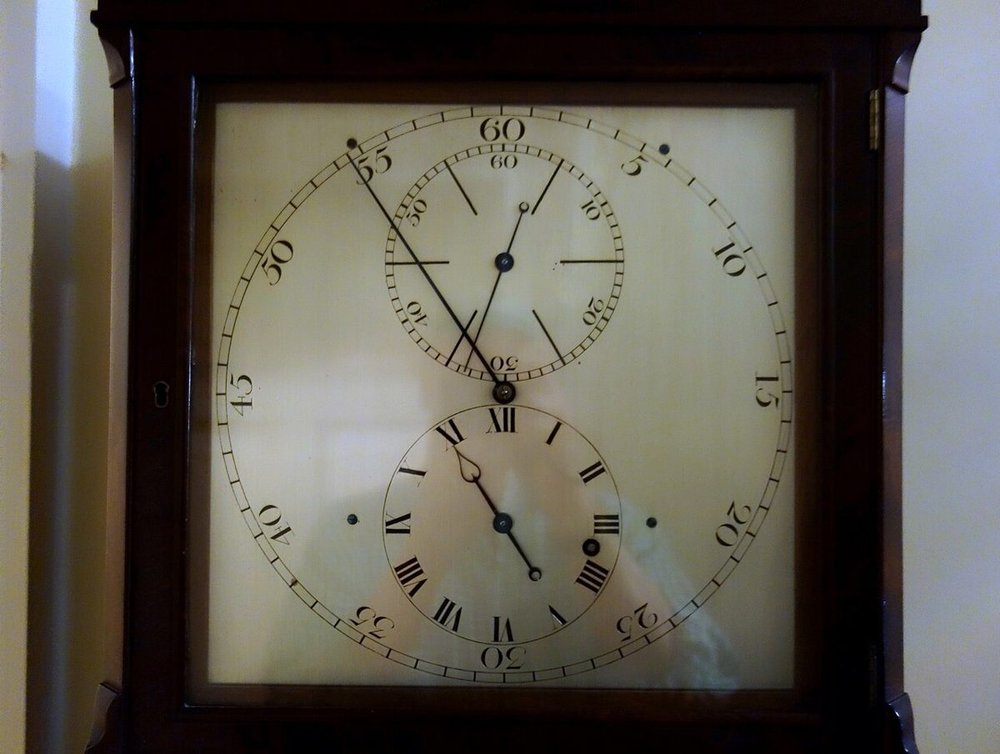
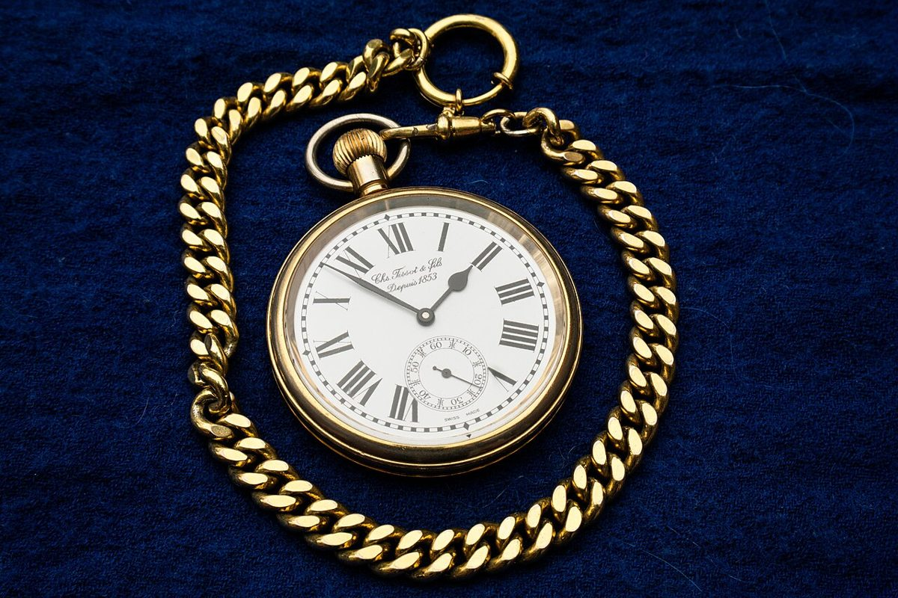
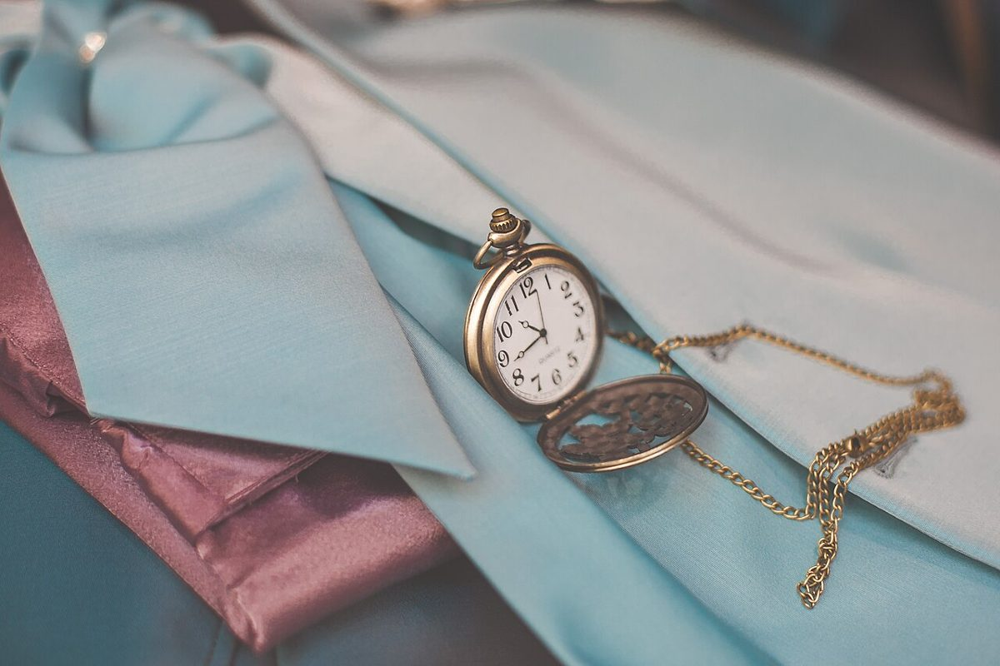
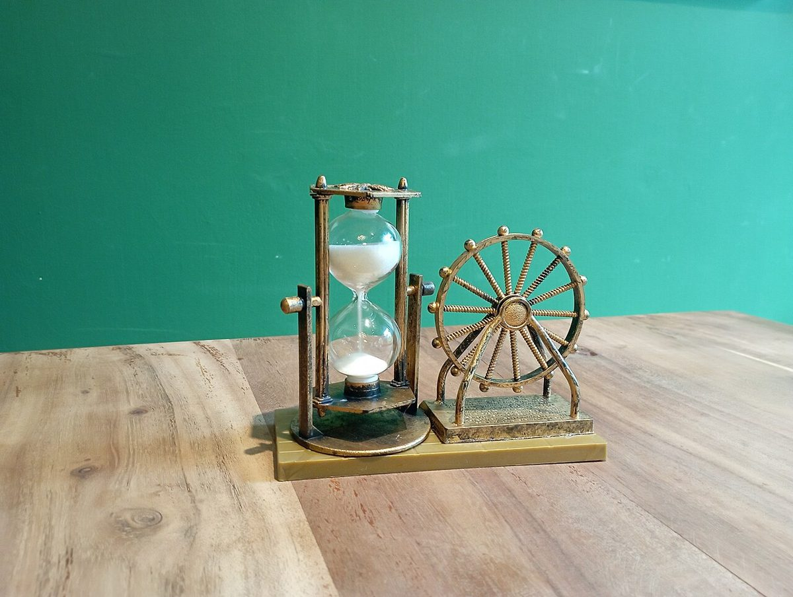
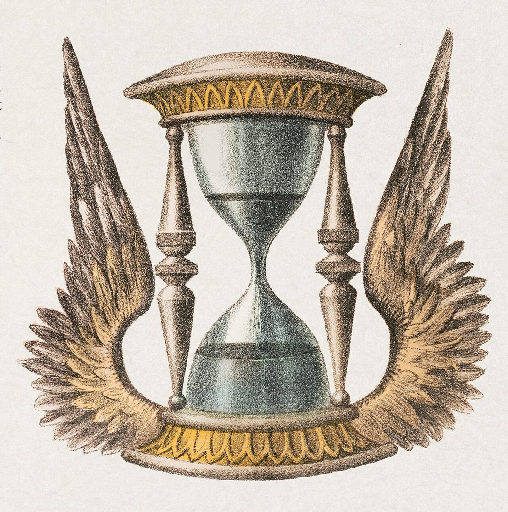

ときのまかふぇ
カフェ / 大分県由布市挾間町
大分県由布市挾間町にあるカフェ「ときのま かふぇ」のご案内ページです。営業時間やメニューなど、詳しいことは準備中。まずはInstagramをのぞいてみてください。

制作側の連想
「ときのま」から休符を思い浮かべました
店名の由来は分かりません。制作側は「ときのま」を「少しの間」と読み、音楽で音が途切れる短い時間、休符を連想しました。このサイトは、いちばん長い全休符から、いちばん短い十六分休符まで、五つの休符を順に並べた作りです。お店の理念・由来とは無関係の、制作側の連想です。
休符の長さ比べ
長い間から、短い間へ。
写真は時間のイメージで選んだ、国外・撮影地不明のフリー素材です。お店や由布市の写真ではありません。

国外のイメージ(英国) 全休符4拍4拍
撮影地不明のイメージ 二分休符2拍2拍
撮影地不明のイメージ 四分休符1拍1拍
撮影地不明のイメージ 八分休符半拍半拍
撮影地不明のイメージ 十六分休符四半拍四半拍
ご案内
お店のこと(確認できたものだけ)
| 所在地 | 〒879-5522 大分県由布市挾間町小野１９７７ |
|---|---|
| 電話 | なし |
| 営業時間 | 準備中 |
| 定休日 | 準備中 |
| ご予約 | 準備中 |
| 駐車場 | 準備中 |
| SNS | Instagram @tokinoma_cafe |